01Contexte et objectifs
Galaxy Swiss Bourdin (GSB) est un laboratoire pharmaceutique issu de la fusion de deux entreprises. Cette fusion demande d'améliorer le système informatique pour faciliter l'activité des visiteurs médicaux et la communication interne.
L'objectif est de mettre en place un intranet et un serveur FTP sécurisé, par lequel les développeurs déposent les mises à jour du site. L'accès doit être réservé aux acteurs de l'entreprise.
- Mettre en place un serveur intranet sécurisé avec Apache.
- Configurer les accès des utilisateurs et les permissions.
- Mettre en place un serveur FTP sécurisé.
- Configurer la résolution du nom du serveur.
- Vérifier et valider le tout par des tests.
02Environnement
Nous créons sous Hyper-V une machine virtuelle Ubuntu Server 24.04, qui hébergera les services.

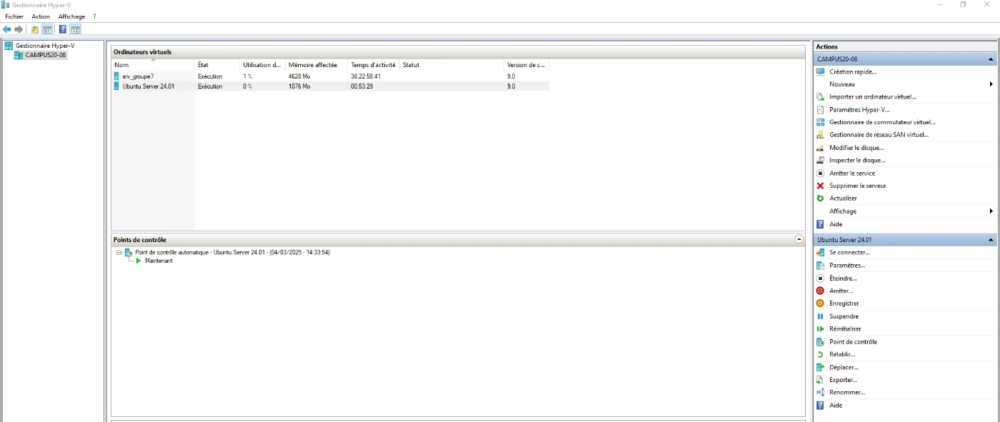
Une fois sur le serveur, nous créons le groupe des développeurs et ses trois utilisateurs :
sudo groupadd devs
sudo useradd dev1
sudo useradd dev2
sudo useradd dev3
sudo usermod -aG devs dev1
sudo usermod -aG devs dev2
sudo usermod -aG devs dev303Adresse IP statique
Le serveur reçoit une adresse IP statique, 172.18.70.5, pour que les services restent joignables à la même adresse.

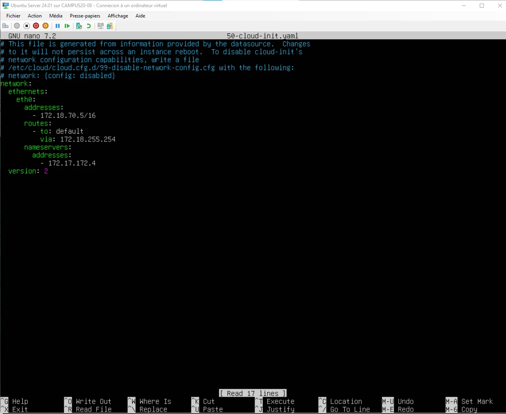

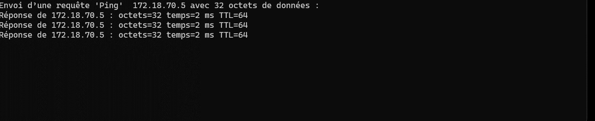
04Serveur web Apache
Apache, installé avec apt, sert l'intranet de l'entreprise.

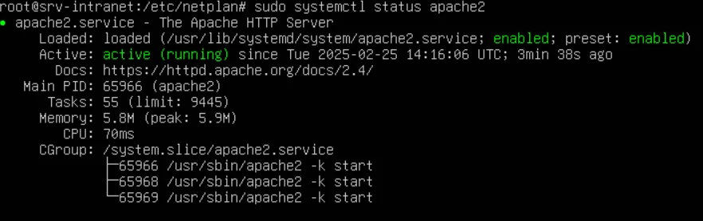

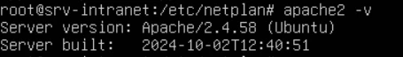
05Sécurisation du serveur web
L'accès au site est protégé par un nom d'utilisateur et un mot de passe. La commande htpasswd crée le fichier /etc/apache2/.htpasswd, qui contient l'utilisateur et son mot de passe chiffré.

Le fichier 000-default.conf reçoit ensuite les directives qui protègent le dossier du site, /var/www/html.

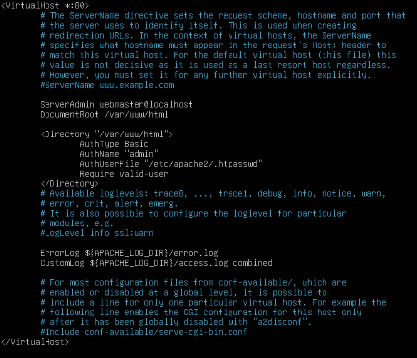

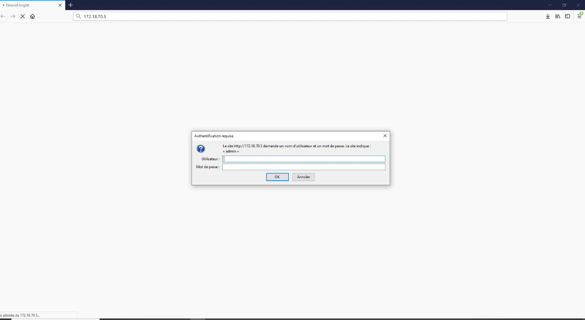
06Validation du service web
Nous vérifions que le serveur web répond et que l'authentification est bien active.

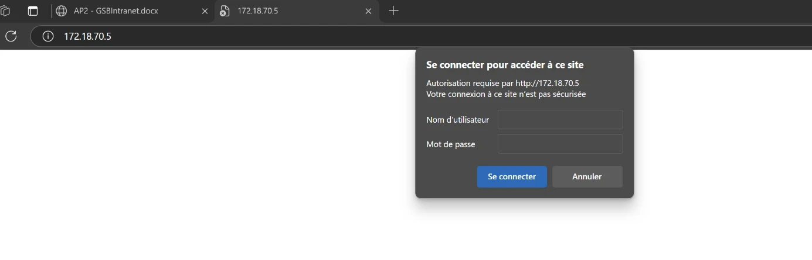

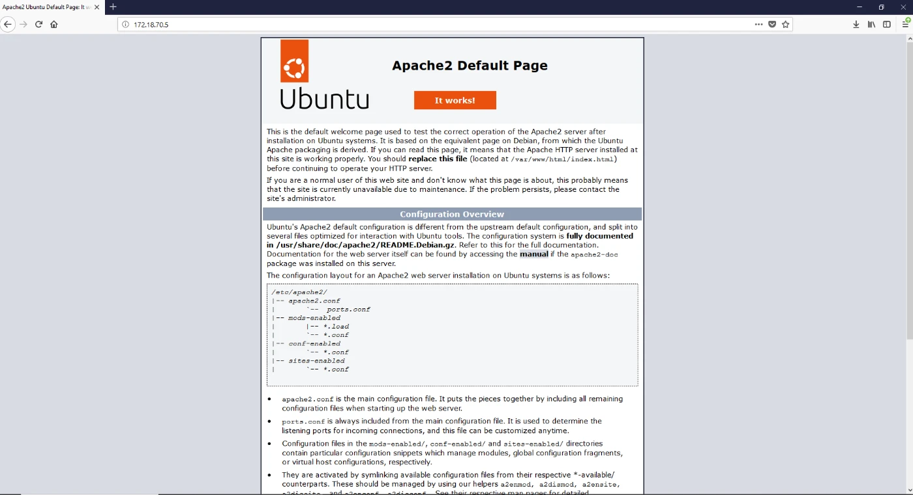
07Serveur FTP
Le service vsftpd permet de transférer des fichiers vers le serveur avec un client FTP.

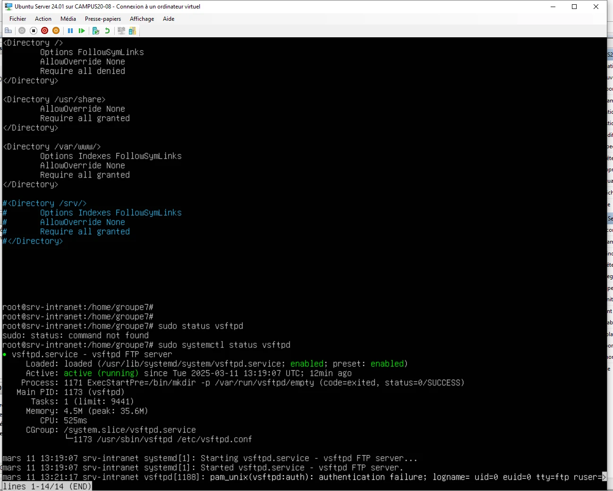
Avec le client FileZilla, nous nous connectons au serveur et transférons dans /var/www/html les fichiers du site à mettre en ligne.

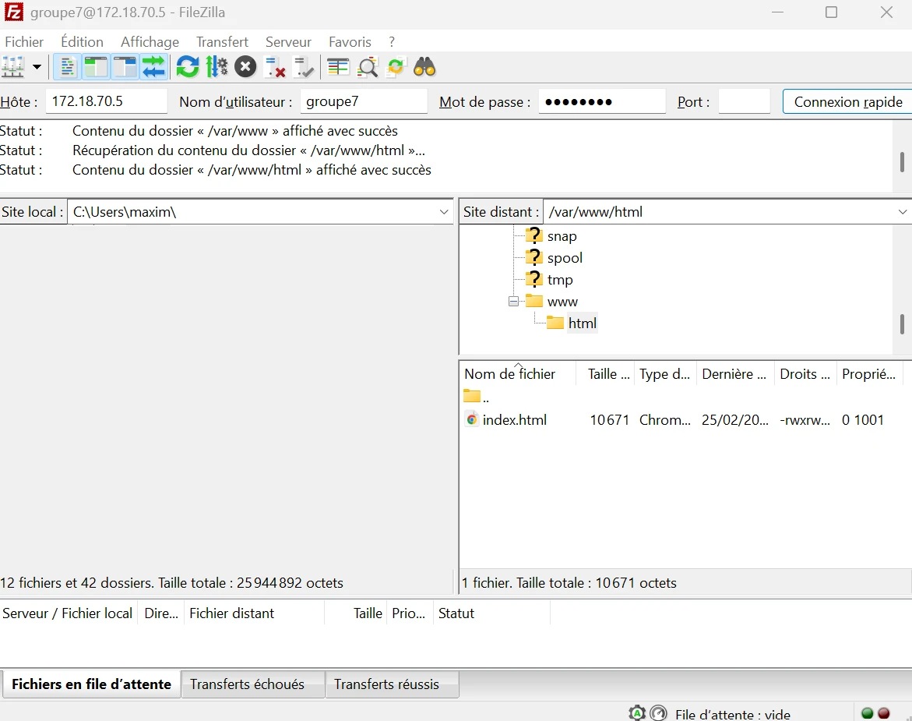

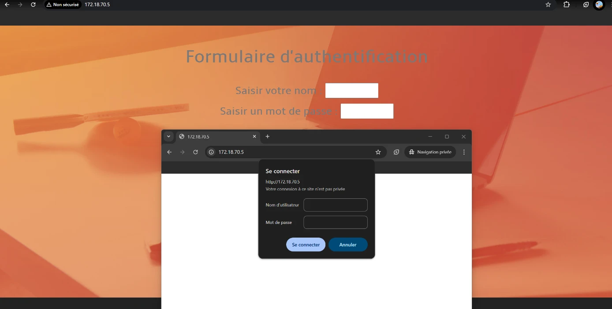
08Sécurisation du serveur FTP
Les développeurs ne doivent accéder qu'aux fichiers du site. Le groupe devs devient propriétaire du dossier du site et reçoit les droits de lecture et d'écriture :
sudo chown -R root:devs /var/www/html
sudo chmod -R 775 /var/www/htmlUn fichier vsftpd.allowed_users liste les utilisateurs autorisés à se connecter en FTP : les développeurs et l'administrateur. La configuration de vsftpd refuse tous les autres.

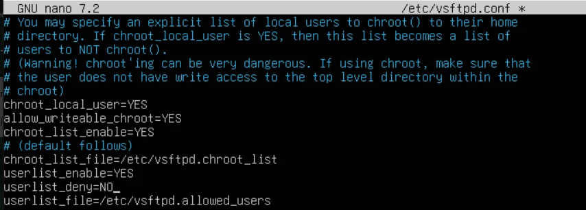
Le compte administrateur accède à tous les dossiers du serveur.

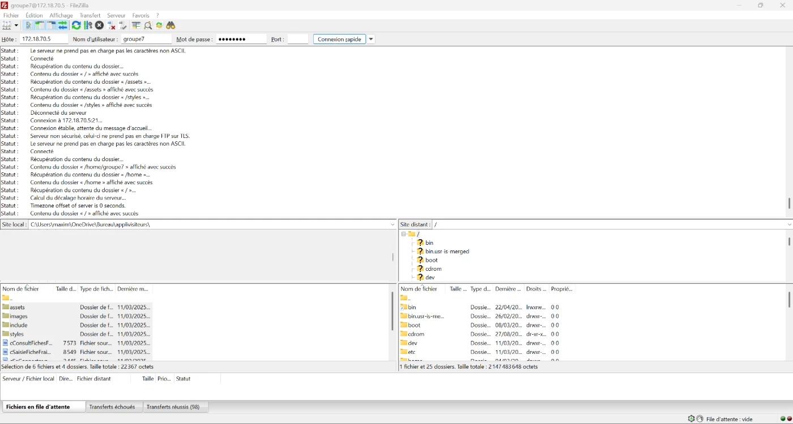
Les développeurs n'accèdent qu'au dossier du site web.

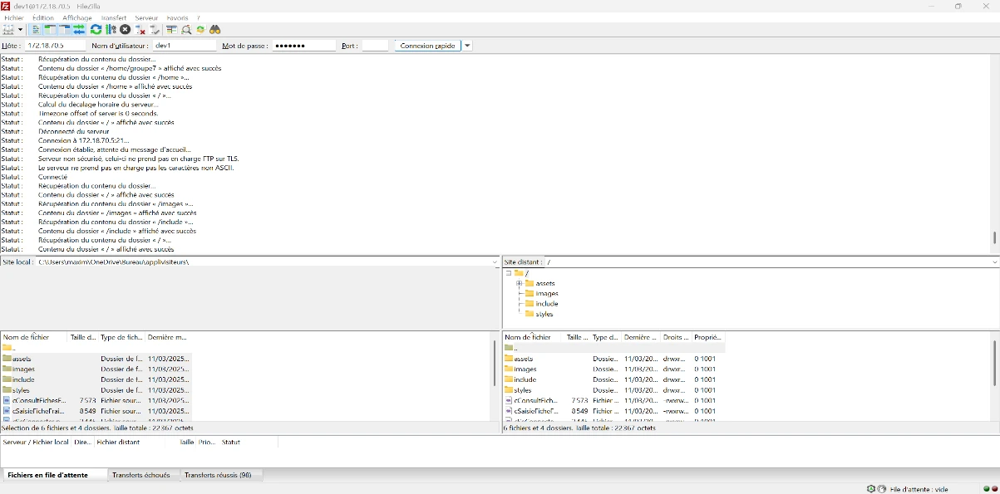
09Validation du service FTP
Nous testons la connexion au serveur FTP, l'envoi et la suppression de fichiers, puis nous vérifions les droits sur le dossier du site.

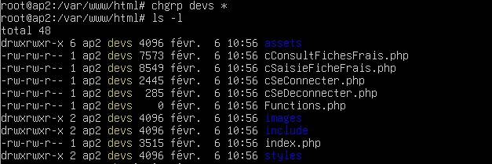
10Résolution de noms
Pour que le serveur soit joignable par un nom plutôt que par son adresse IP, nous ajoutons l'hôte « visiteurs » dans la zone DNS du contrôleur de domaine Windows Server (mdl.local), vers l'adresse 172.18.70.5.

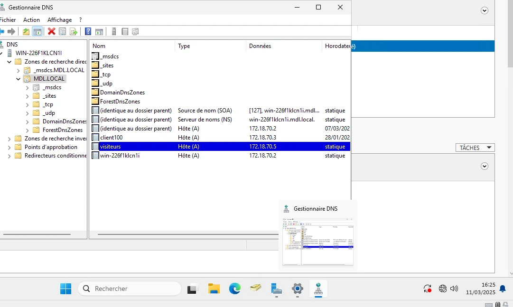
Le poste client utilise le contrôleur de domaine (172.18.70.2) comme serveur DNS.

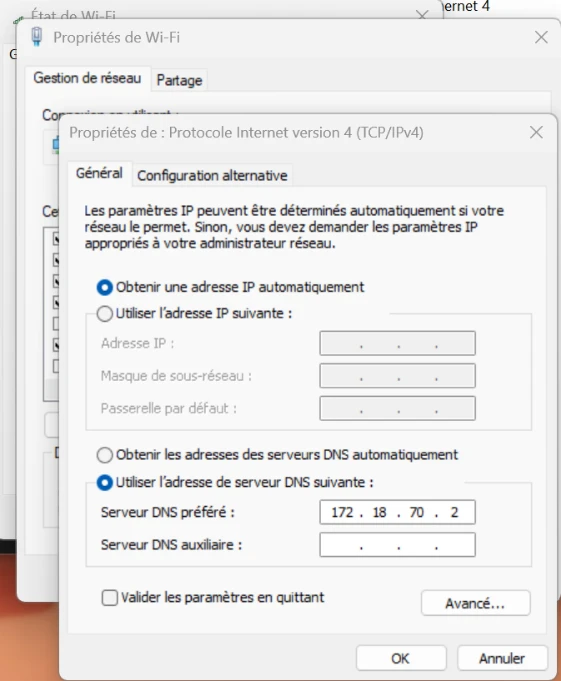

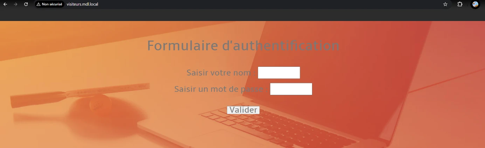
11Bilan
Nous avons répondu aux besoins de GSB en déployant un serveur web et un serveur FTP conformes au cahier des charges. Apache est protégé par une authentification par mot de passe, qui réserve l'accès aux utilisateurs autorisés. Le serveur FTP permet aux développeurs du groupe devs de modifier uniquement les fichiers du site. La résolution de nom simplifie l'accès sur le réseau local. Une série de tests a validé chaque fonction : connexion FTP, authentification web et restrictions.